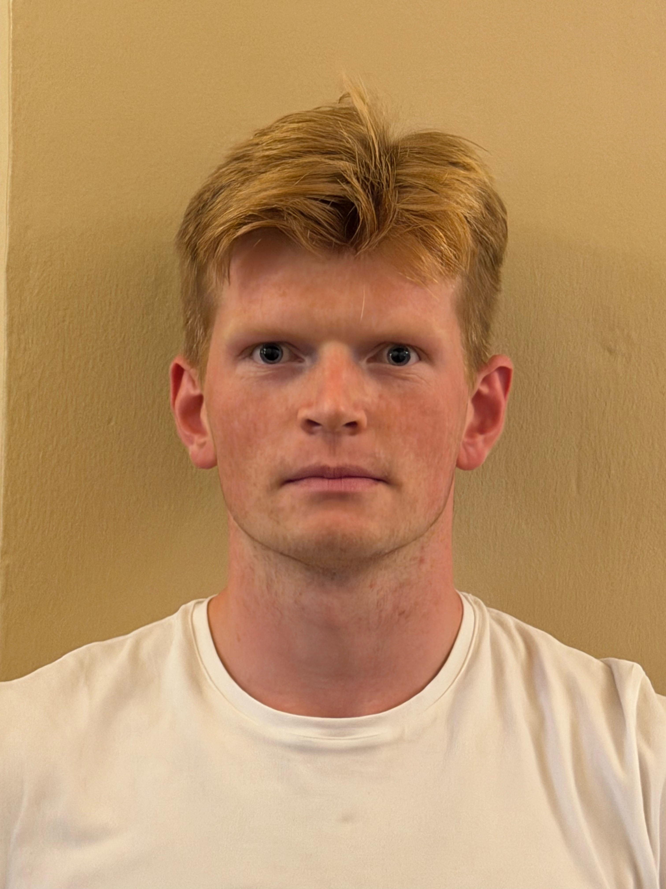
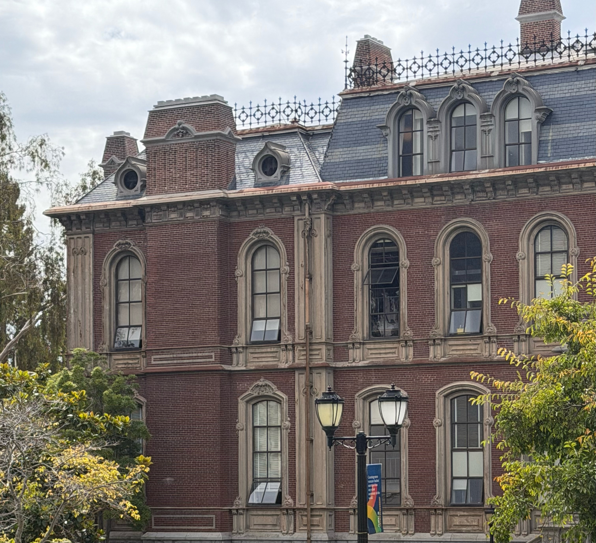
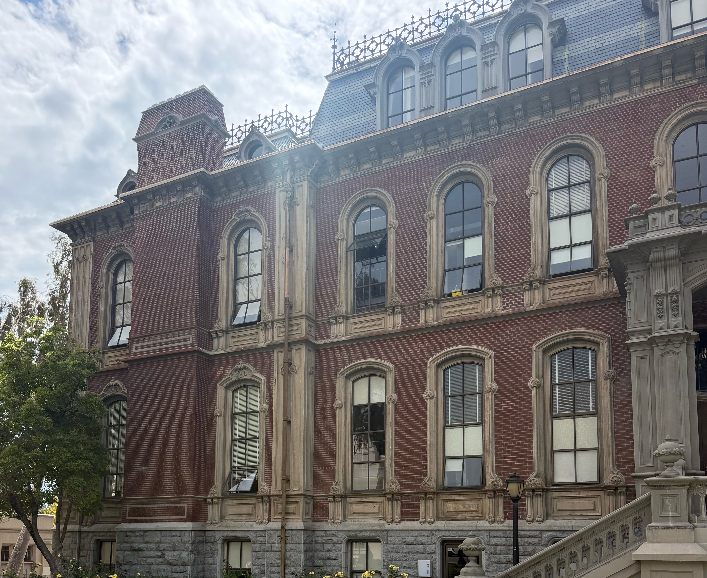

Project 00
Becoming Friends with Your Camera
Part 1
Selfie: The Wrong Way vs. The Right Way
Distance changes perspective and zoom changes framing. This can be seen in the apperant different distance/depth from the nosetip to the face in the 2 pictures. This difference in appearant depth is due to the distance from the camera to the subject, and will not be undone with changes in focal length.

Part 2
Architectural Perspective Compression
On left picture i am standing far from building and zooming in, on the right one i am standing close and looking at same scene. In the left picture, the distance between different part of building is relative small. The scene therefore looks flattend or compressed. In the right picture the relative disance between different parts of the builind is larger. You there get a greater sense of depth from this picture.


Part 3
The Dolly Zoom
Moved camera backwards, while zooming in.